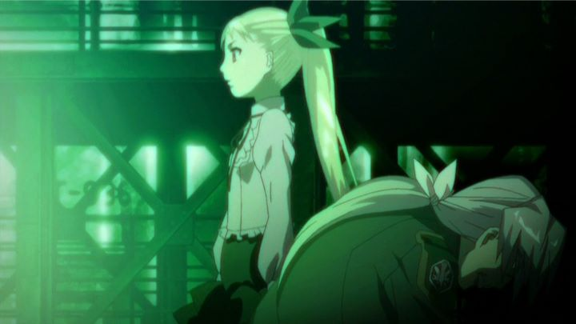

Anime director Akiyuki Shinbo is one of the most unique creative minds that is capable of regularly getting work in the industry. He captured the attention of most anime fans in English-speaking countries around 2011 and 2012, thanks to the acclaimed and successful "Puella Magi Madoka Magica" (2011) being streamed online worldwide at near same as the broadcast schedule in Japan, and his cult adaptation of "Bakemonogatari" finally being released in America on home video in 2012. More so than any other director, Shinbo has a distinct and recognizable style that can be polarizing, but to those who admire it, refreshing. Personally, I was a fan, and I searched for other works to eat up after having seen his breakout hits. And this new-found success meant that much of his other work (he had been directing as early as 1994) was finally being released outside of Japan to take advantage of this new recognition. There wasn't a better time to jump in. Of the available shows, one that stood out with promise was "Dance in the Vampire Bund," a romantic tale of vampires and werewolves at a time when young-adult novel "Twilight" made the genre relevant again, animated by the now respected Studio Shaft, the same group behind the afore-mentioned "Madoka Magica" and "Bakemonogatari." It was technically made after "Bakemonogatari" (2010 versus 2009), so it would be likely that the experimental and stunning design choices from one show might transfer to the other. Additionally, it was one of the few shows by Shinbo released with an English dub, courtesy of Funimation in America, which was helpful in a directorial style heavy in text and exposition. And again, when comparing with "Madoka Magica" and "Bakemonogatari," both licensed in America by Aniplex of America and comparing home video prices, "Dance in the Vampire Bund" was available for less than one fifth of the price. I state these facts to help understand my mindset going into "Dance in the Vampire Bund." It isn't wise to make purchasing choices solely on having seen other work made by some of the same team. Other reviews suggested is was a serviceable, but otherwise passable show compared to his larger hits. My expectations were lowered slightly, as if I were watching simply to satisfy a addiction for more of something that grabbed my imagination. This might be why, after having seen the twelve-episode series, I walked away impressed. It isn't quite as good as "Madoka Magica" or "Bakemonogatari" perhaps, but compared to some of his other works, it was a close second. For the money-conscious, it would do as a substitute. But make no mistake, "Dance in the Vampire Bund" is unique enough and worth a watch in its own right, for its own reasons.The opening episode on its own might be misleading to what to expect from the show as a whole, but it is clever and well-executed, and easy to appreciate for horror fans. It plays like a cable show on Japanese television, a variety show where a group of guest panelists discuss the recent alleged sighting of vampires, and whether or not they really exist. It keeps focused on the fake tv screen up until the reveal, where vampires are indeed real and a rogue begins attacking the audience. It's only the end of this episode that hints at what to expect for the rest of the series: Mina, the princess of the vampires, smites down the rogue after watching quietly in the audience, and then proudly announces that the vampire race was coming out of hiding, intending to live alongside humans in their own protective space called the Vampire Bund.For whatever you mgiht think of the story-telling Shaft and Shinbo tends to utilize, I think everyone can agree parts of their style can border on the unintentionally hilarious. At least, I think it is unintentional, but you can never tell with Shinbo. The following episodes show a young man in high school who admits to have forgotten most of his past. Quickly a young girl (vampire Mina) comes to him, claiming to be part of his forgotten past. Almost immediately, student Akira's wolf powers awaken to come to Mina's aid, and he fully remembers her... except for the important parts, like what caused his memory to disappear in the first place. Is it stupid? Absolutely. Is it fun to watch unravel? Absolutely. There is even the customary swimming pool episode and the episode where the mysterious girl becomes a transfer student in the main male character's school, stereotypical of anime in the same way scenes are homages to the horror genre... I feel like those involved knew exactly what they were doing. At the center of the story, aside from discovering these secret memories, is Mina's march towards creating a peaceful world for her kind to exist alongside humans. In other vampire stories, they might simply attack and replace the human race. But Mina is wiser than her child-like body might suggest; if humans, the main source of blood and food for the vampires, were to disappear, then what would happen to the vampires? And scaring humans into submission isn't an answer either, less both sides live in fear of one uprising over te other. The only answer is diplomacy. This is one of those rare shows that feels intellectual and still manages to be engrossing, like "Spice and Wolf," or even "Code Geass" and "Death Note." Princess Mina could very well give schemers in those shows a run for their money too. When politicians on the human side play to the masses and refuse to cooperate with the vampire race, Mina is not afraid to play against the rules to make things go her way. She can be dangorous without ever baring her fangs. It plays with the viewer's expectations. Are we supposed to trust Mina and her claims of peace, or does she have some secret agenda she isn't revealing? If we, the audience, are humans, then why are we often rooting for the vampire side? While the politics keeps you invested, the show has variety to further engross. This mostly comes in pure horror, with classic scares and setups inspired directly from literature and film. Most vampires side with the princess, but even under her rule there are rebellious rogue monsters that attack the humans that she must control in keeping peace on both sides. These vampires are scary in a cheesy way, and often sexualized too - in one episode where a class of students hides in a church, the vampires attack by tearing off shirts, the camera paying close attention to the girls. It doesn't feel forced. Vampires have always been a seductive monster, what with the sucking and licking and temptation of eternal life. Don't like horror and violence? Maybe you can focus on the forbidden romance (both race and royal hierarchy in account) between Mina and Akira, plus the other students that pine for Akira (not without feeling earned in the story). The epsiodes are jam-packed, with a satisfying ending occuring around episode seven, and the rest of the show acting as a second part to deal with unfinished threads. The last episode makes it clear there is a lot more to the story to read in the manga, but there is enough to satisfy here.While there is something everyone can enjoy here, it is also likely that parts of the show can turn a given viewer off in equal measure. Like horror? Maybe the politics will seem boring. Like romance? Maybe the violence is too much. We haven't yet mentioned some of the controversal imagery, ranging from bloody victims pinned on crosses in a church, to nudity. Princess Mina in particular is nude for much of the show, playfully teasing Akira, and at one point muttering how she wished for a older body to better suggest her hundred-plus year maturity. Her virginity at one point comes into question too as a plot point, and I won't talk about that here. Mina does not leave much to the imagination, only a single pencil line away from the show being classified as porn. For most people, this type of content in cartoon can be offensive enough. Add that Mina has a CHILD's body, barely passing for eight-years old. To accept being turned on would be damaging to anyone's reputation here. The show was even considered for censorship on the American release (something that is unheard of for most shows of the time), and is outright banned in other countries. Personally, I see no sexuality in Mina's child form, but a respectible beauty that perhaps better suits her character. Whether or not that was intended by the creators, I do not know and would rather not think about. As for production value, it is clear most of the studio's money was spent elsewhere, but there are still some creative design choices in how each shot is framed. Shinbo's trademark "moving the camera while close-up along a character's body from bottom up to their head while they talk" is just one of the hallmarks that make this true to his style, and it isn't to take for granted that the animators can accomodate those difficult scenes when needed. Things like music is serviceable, but disappointing in the opening and ending themes given the strong subject matter. In these ways, perhaps "Dance in the Vampire Bund" just barely fullfills my craving, despite the studio and director exceling in other works. Despite that, these are still uniquely done in a way that stands out to most shows. And the story is just too much darn fun to watch... maybe that is a lucky break from the writer of the original manga? Now that I think about it, the best shows from Shaft always had entertaining WRITING, even more important than the distinct animation and visual style. They really know how to pick 'em.
- "Ani" More reviews can be found at : https://2danicritic.github.io/ Previous review: review_Dagashi_Kashi Next review: review_Danganronpa_-_The_Animation